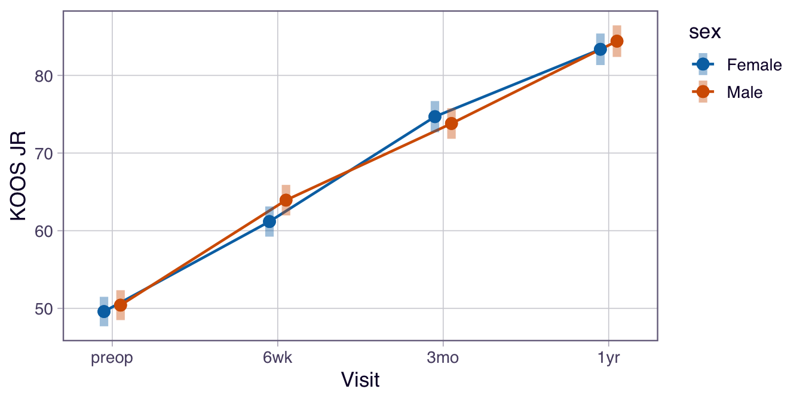

PROMs at several visits, including patients who missed some: random intercepts, time as categories or a curve, group × time, and estimated marginal means.
PROMs are collected at several visits, and patients miss some of them. Page 9 analyzed repeated scores with repeated-measures ANOVA, which only uses patients measured at every visit. A linear mixed model uses every score from every patient, and answers the questions a PROM study usually asks: how much do patients improve, by when, and does recovery differ between groups?
The examples use KOOS JR, the knee score, in the 330 total knee replacements. Hips answer a different questionnaire (HOOS JR), and a point on one isn’t guaranteed to equal a point on the other, so the two aren’t mixed in one model.
Note💡 How this page works
Run the code blocks in order, from the top: later blocks use the packages, data and models made earlier.
Each knee is treated as its own patient until the section on bilateral patients.
Why not repeated-measures ANOVA?
Count how many of the four visits each knee has a score for:
library(tidyverse)library(lmerTest) # lme4's lmer(), plus p-values for its fixed effectslibrary(emmeans) # estimated marginal meanslibrary(splines) # natural cubic splines, for time as a curveproms <-read_csv("data/proms_long.csv", show_col_types =FALSE)cohort <-read_csv("data/cohort.csv", show_col_types =FALSE)knees <- proms |>filter(instrument =="KOOS JR", !is.na(prom_score)) |># every knee score that existsleft_join(select(cohort, case_id, sex, age), by ="case_id") |>mutate(visit =factor(visit, levels =c("preop", "6wk", "3mo", "1yr")))knees |>count(case_id, name ="visits") |># scores per kneecount(visits, name ="knees") # knees with 1, 2, 3 or 4 scores
import numpy as npimport pandas as pdimport patsyimport matplotlib.pyplot as pltimport statsmodels.formula.api as smfproms = pd.read_csv("data/proms_long.csv")cohort = pd.read_csv("data/cohort.csv")knees = proms[(proms["instrument"] =="KOOS JR") & proms["prom_score"].notna()] # every knee score that existsknees = knees.merge(cohort[["case_id", "sex", "age"]], on="case_id")visits = ["preop", "6wk", "3mo", "1yr"]knees["visit"] = pd.Categorical(knees["visit"], categories=visits) # pre-op first: the referenceprint(knees.groupby("case_id").size().value_counts().sort_index()) # knees with 1, 2, 3 or 4 scores
1 4
2 28
3 106
4 192
Name: count, dtype: int64
All 330 knees have at least one score, 1146 scores in all, but only 192 knees have all four. Repeated-measures ANOVA would drop the other 138 knees (42%) together with every score they did give. A mixed model keeps all 1146 scores.
Dropping patients isn’t only wasteful. It can bias the result, and that depends on why scores are missing: - Missing completely at random: a missed visit has nothing to do with the patient’s recovery (the clinic rescheduled, the patient moved). Both methods are unbiased; the mixed model is more precise because it uses more data. - Missing at random: missing depends on things you measured, such as an earlier score. A patient who scored badly at 6 weeks is less likely to return at 3 months. Repeated-measures ANOVA is then biased, because the patients it keeps recovered better; a mixed model is still unbiased, as long as the model describes how a knee’s scores are related, because it uses the earlier scores to fill the picture in. - Missing not at random: missing depends on the score that wasn’t collected (patients stay away because their knee is worse that week). Nothing fixes this from the data alone. Say so as a limitation.
A random intercept for each knee
Scores from the same knee are related: a knee that starts low tends to stay lower than average. A mixed model handles this with a random intercept: each knee gets its own baseline level, shifted up or down from the average. The fixed effects (here, the visits) describe the average patient; the random intercepts describe how much knees differ from that average.
knee_model <-lmer(prom_score ~ visit + (1| case_id), data = knees) # (1 | case_id): an intercept per kneeprint(summary(knee_model), correlation =FALSE)
Linear mixed model fit by REML. t-tests use Satterthwaite's method [
lmerModLmerTest]
Formula: prom_score ~ visit + (1 | case_id)
Data: knees
REML criterion at convergence: 8673.7
Scaled residuals:
Min 1Q Median 3Q Max
-2.94682 -0.58192 0.00759 0.61247 2.36932
Random effects:
Groups Name Variance Std.Dev.
case_id (Intercept) 78.10 8.837
Residual 73.45 8.570
Number of obs: 1146, groups: case_id, 330
Fixed effects:
Estimate Std. Error df t value Pr(>|t|)
(Intercept) 49.9946 0.6882 708.3560 72.64 <2e-16 ***
visit6wk 12.5402 0.7050 829.7306 17.79 <2e-16 ***
visit3mo 24.2186 0.7169 834.1177 33.78 <2e-16 ***
visit1yr 33.8988 0.7335 838.0791 46.22 <2e-16 ***
---
Signif. codes: 0 '***' 0.001 '**' 0.01 '*' 0.05 '.' 0.1 ' ' 1
knee_model = smf.mixedlm("prom_score ~ visit", knees, groups="case_id").fit(reml=True) # groups: an intercept per kneeprint(knee_model.summary())
Mixed Linear Model Regression Results
========================================================
Model: MixedLM Dependent Variable: prom_score
No. Observations: 1146 Method: REML
No. Groups: 330 Scale: 73.4507
Min. group size: 1 Log-Likelihood: -4336.8570
Max. group size: 4 Converged: Yes
Mean group size: 3.5
--------------------------------------------------------
Coef. Std.Err. z P>|z| [0.025 0.975]
--------------------------------------------------------
Intercept 49.995 0.688 72.641 0.000 48.646 51.344
visit[T.6wk] 12.540 0.705 17.788 0.000 11.158 13.922
visit[T.3mo] 24.219 0.717 33.776 0.000 22.813 25.624
visit[T.1yr] 33.899 0.734 46.210 0.000 32.461 35.337
case_id Var 78.098 1.078
========================================================
Reading the output: - Fixed effects: the average KOOS JR was 50.0 before surgery (the intercept), and higher by 12.5 points at 6 weeks, 24.2 at 3 months and 33.9 at 1 year. Each visit’s coefficient is its difference from pre-op. - Random effects: knees’ own baseline levels vary around the average with an SD of 8.8 points (R’s “case_id (Intercept)” row; Python’s “case_id Var” row gives the variance, 8.84² = 78.1). The scores also vary from visit to visit within a knee with a residual SD of 8.6 points. - How much of the variation is between knees: 78.1 / (78.1 + 73.5) = 0.52, the intraclass correlation (page 17 uses the same idea for raters). About half of the spread in scores comes from knees differing from each other; that’s why the scores can’t be treated as independent. - REML: both programs fit the model by restricted maximum likelihood, the standard choice for estimating it.
Tip🔀 R vs Python: degrees of freedom
The estimates agree. The standard errors agree to three or four significant figures: lme4 computes them with the knee and residual variances held at their estimates, statsmodels from the curvature of the whole likelihood. The p-values and CIs differ a little more. lmerTest gives each fixed effect a t test with Satterthwaite degrees of freedom, an approximation to how much information the estimate rests on. statsmodels uses a z test, as if the degrees of freedom were infinite. With 330 knees the difference is in the third decimal place; with a small study, trust R’s.
Estimated marginal means
Report the model’s estimate at each visit, with its 95% CI. These are the estimated marginal means (EMMs): the average score the model expects at each visit, using every knee, including those with missed visits.
# the planned comparison: 1 year minus pre-op (one comparison, so no adjustment; page 15)confint(contrast(knee_means, method =list("1yr - preop"=c(-1, 0, 0, 1))))
emmean, lower.CL / upper.CL: KOOS JR averaged 50.0 (95% CI 48.6 to 51.3) before surgery, 62.5 at 6 weeks, 74.2 at 3 months and 83.9 (95% CI 82.5 to 85.3) at 1 year.
The contrast: the planned comparison, the improvement from pre-op to 1 year: 33.9 points (95% CI 32.5 to 35.3). Choose such comparisons in advance; comparing every pair of visits would need an adjustment (page 15).
The 192 knees with all four scores average 49.2 before surgery and 84.0 at 1 year. That’s close to the mixed model, as expected here: in this synthetic cohort, visits were missed almost entirely at random: by chance, or because follow-up had ended. With real patients you can’t count on that, and the mixed model’s answer, which uses all 330 knees, is the one to report.
Time: categories or a curve?
So far each visit has its own mean: time as categories. That fits when everyone is seen at the same few scheduled visits, and it makes no assumption about the shape of recovery. The alternative is time as a number, days since surgery, with a curve. That suits many or irregular visits, but the curve’s shape must be right. Recovery isn’t a straight line, so use a natural cubic spline (page 12 explains splines):
The curve passes close to the visit means (the points): 62.7 at 6 weeks and 84.1 at 1 year, against 62.5 and 83.9. But look between 3 months and 1 year. No knee was scored there, and the curve invents a peak of about 89 points at around 8 months, then falls. With a few fixed visits, a curve has nothing to follow between them. Categories are simpler, make no such claims, and are what the rest of this page uses.
Warning⚠️ Watch out: a straight line for time
prom_score ~ visit_days would force recovery to be a straight line: as steep between 3 months and 1 year as in the first 6 weeks. Always plot the visit means first. If you use time as a number, let it bend.
Does recovery differ between groups?
To ask whether men and women recover differently, add sex and its interaction with visit. The interaction lets each sex have its own pattern of change. Its test asks whether the patterns differ, which is the question; the main effect of sex alone only compares the average levels.
sex_model <-lmer(prom_score ~ visit * sex + (1| case_id), data = knees)sex_anova <-anova(sex_model) # F tests, Satterthwaite degrees of freedomsex_anova
Type III Analysis of Variance Table with Satterthwaite's method
Sum Sq Mean Sq NumDF DenDF F value Pr(>F)
visit 178113 59371 3 831.68 812.3992 <2e-16 ***
sex 52 52 1 327.09 0.7179 0.3975
visit:sex 458 153 3 831.68 2.0886 0.1002
---
Signif. codes: 0 '***' 0.001 '**' 0.01 '*' 0.05 '.' 0.1 ' ' 1
emmip(sex_model, sex ~ visit, CIs =TRUE) +# the two recovery patterns, with 95% CIslabs(x ="Visit", y ="KOOS JR")

sex_model = smf.mixedlm("prom_score ~ visit * sex", knees, groups="case_id").fit(reml=True)interaction = [name for name in sex_model.fe_params.index if":"in name] # the three visit x sex termssex_wald = sex_model.wald_test(" = 0, ".join(interaction) +" = 0", scalar=True) # do the patterns differ?print(sex_wald.statistic, sex_wald.pvalue) # chi-square on 3 df, p-value
6.2636809563597895 0.09946304267009223
sex_grid = pd.DataFrame([(visit, sex) for sex in ["Female", "Male"] for visit in visits], columns=["visit", "sex"])sex_grid["visit"] = pd.Categorical(sex_grid["visit"], categories=visits)sex_means = marginal_means(sex_model, sex_grid)print(sex_means.round(2))
visit:sex, F = 2.09 on 3 and 832 df, p = 0.100: no clear evidence that recovery differs between men and women. Python’s Wald test gives the undivided statistic, 6.26 on 3 degrees of freedom, with a chi-square p-value of 0.099.
The EMMs show why: the two patterns cross back and forth by a point or two. Men were 2.7 points ahead at 6 weeks (63.9 vs 61.2), women 0.9 points ahead at 3 months, and they were within about a point of each other at 1 year (84.4 vs 83.4).
Warning⚠️ Watch out: a non-significant interaction isn’t “the same recovery”
p = 0.100 means the data can’t show a difference in recovery between the sexes; it doesn’t show the recoveries are the same. Report the EMMs with their CIs so readers can see how big a difference the data still allow.
Bilateral patients
46 of the knee patients had both knees replaced, so 92 of the 330 knees come in pairs. The two knees share the same person, so their scores may be related beyond what each knee’s own intercept captures. The standard fix is a second random intercept, for the patient, with knees nested in patients: in lme4, (1 | patient_id/case_id); in statsmodels, groups="patient_id" with a variance component for case_id.
In this cohort the patient-level intercept comes out at almost exactly zero (lme4 warns that the fit is “singular”), so the simpler model above is enough. In your data, fit the nested model and report it unless it is singular. Page 3 explains why bilateral patients need care, and page 14 shows the survival-analysis version.
How to report it
Methods: KOOS JR scores before surgery and at 6 weeks, 3 months and 1 year were analyzed with a linear mixed model, with visit as a categorical fixed effect and a random intercept for each knee, fitted by restricted maximum likelihood. All available scores were used, including those from knees that missed a visit. Differences between men and women in the pattern of recovery were tested with a visit × sex interaction (Satterthwaite degrees of freedom). The planned comparison was the change from before surgery to 1 year. Estimated marginal means are reported with 95% CIs.
Results: Of 330 knees, 192 (58.2%) had all four scores; all 1146 scores were analyzed. The estimated mean KOOS JR was 50.0 (95% CI 48.6 to 51.3) before surgery and 83.9 (95% CI 82.5 to 85.3) at 1 year; change 33.9 points (95% CI 32.5 to 35.3). For the visit × sex interaction, F(3, 832) = 2.09 (p = 0.100); at 1 year the estimated mean was 84.4 (95% CI 82.4 to 86.4) in men and 83.4 (95% CI 81.3 to 85.4) in women.
Exercises
The solutions use the packages, data and functions loaded in the sections above, so run the page from the top first.
1. Fit the same random-intercept model to HOOS JR in the total hip replacements and report the estimated mean at each visit.
Results: Of 270 hips, 136 had all four scores; all 906 scores were used. The estimated mean HOOS JR was 45.5 before surgery, 68.6 at 6 weeks, 80.1 at 3 months and 88.2 (95% CI 86.7 to 89.7) at 1 year.
2.Page 9 analyzed the VR-12 physical component score (PCS) with repeated-measures ANOVA in the 328 joint replacements measured at all four visits. Fit a mixed model with every PCS score instead. How many joint replacements does it use, and do the visit means change?
The mixed model uses all 600 joint replacements (2052 scores) instead of the 328 with all four scores. Its visit means, 31.2, 35.3, 41.0 and 44.9, are almost the same as page 9’s means for those 328 (31.2, 34.9, 41.0 and 44.9): in this synthetic cohort visits were missed almost entirely at random, so dropping incomplete cases cost precision rather than accuracy.
3. Does knee recovery differ by age group (under 65, 65 to 74, 75 and over)? Fit the visit × age group model and write the Results sentence.